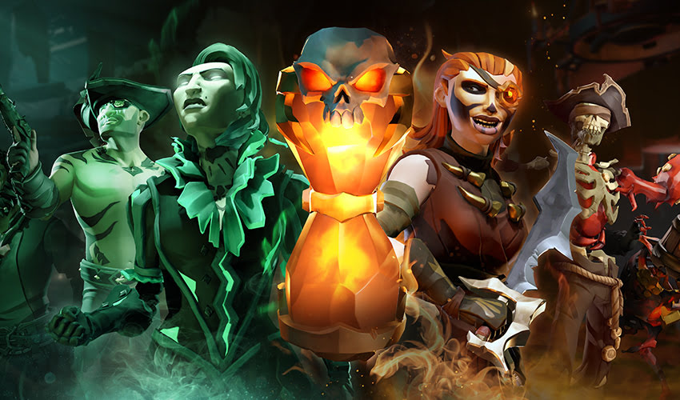
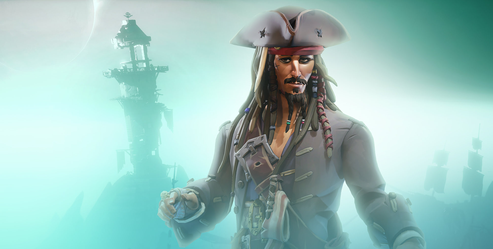
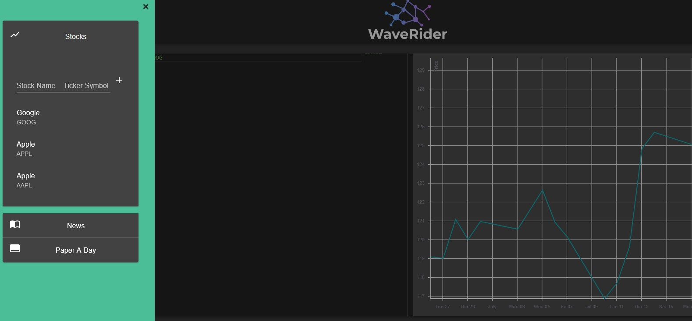
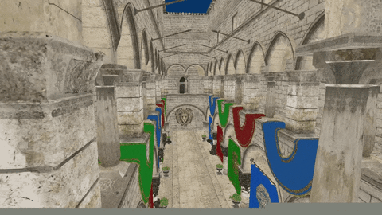
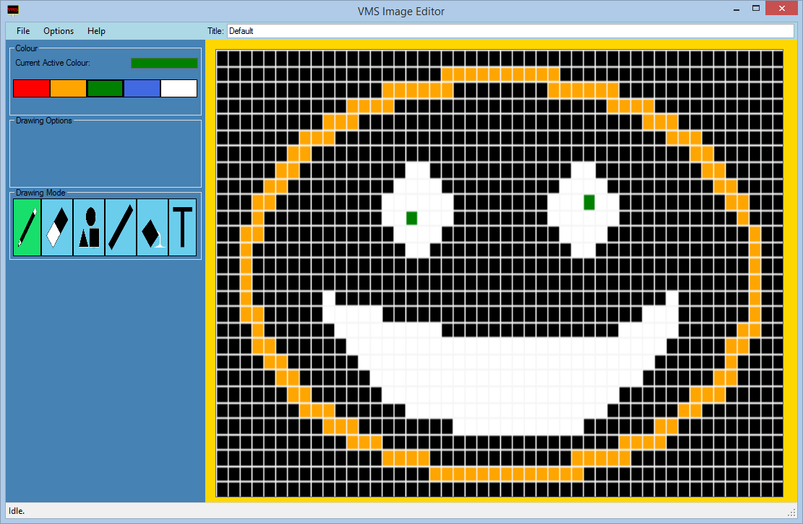

A software engineer working in the AAA game industry, writing about software engineering and mathematics.
Portfolio
Sea of Thieves


Currently I work on Sea of Thieves in a gameplay team at Rare, having primarily worked on popular updates A Pirate’s Life and Season 8’s PVP on demand.
WaveRider

A personal tool for researching that pulls papers from arxiv and financial data from tiingo built with React + Materials and Rust.
Game Engine for Fun

A game engine written in C++ to learn more about low level / internal workings of a game engine and the architectural challenges.
VMS Image Editor

A desktop application written in C# for creating images to be displayed on VMS’s

 Dominic Musgrave
Dominic Musgrave